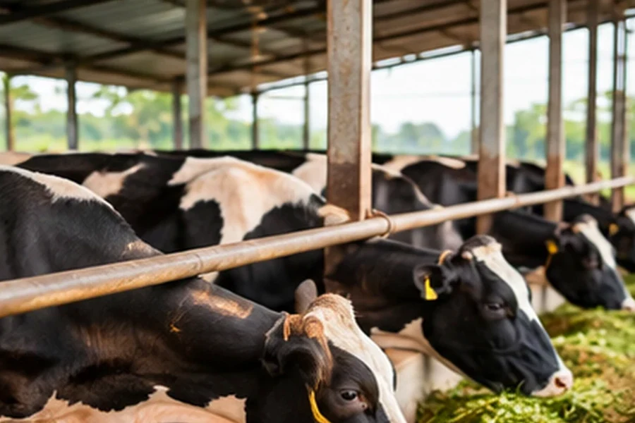
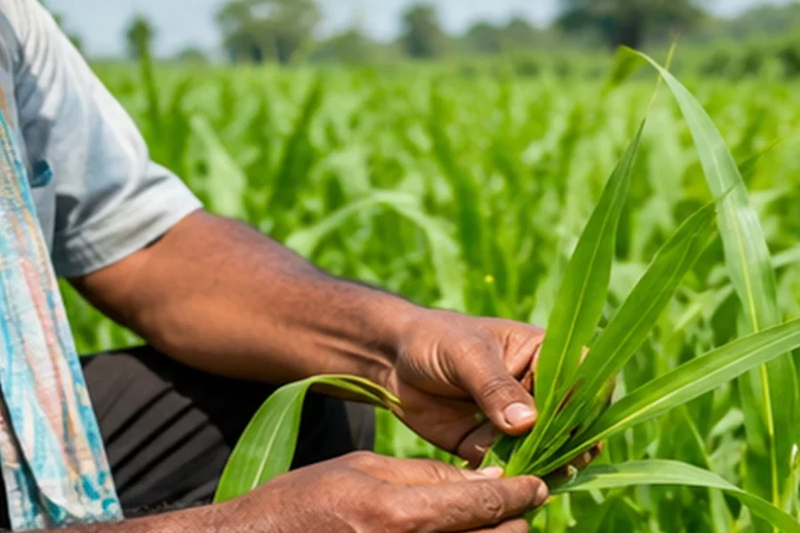
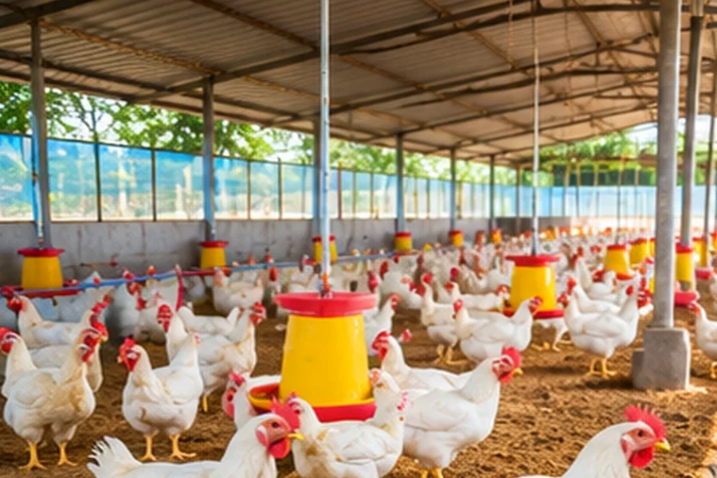
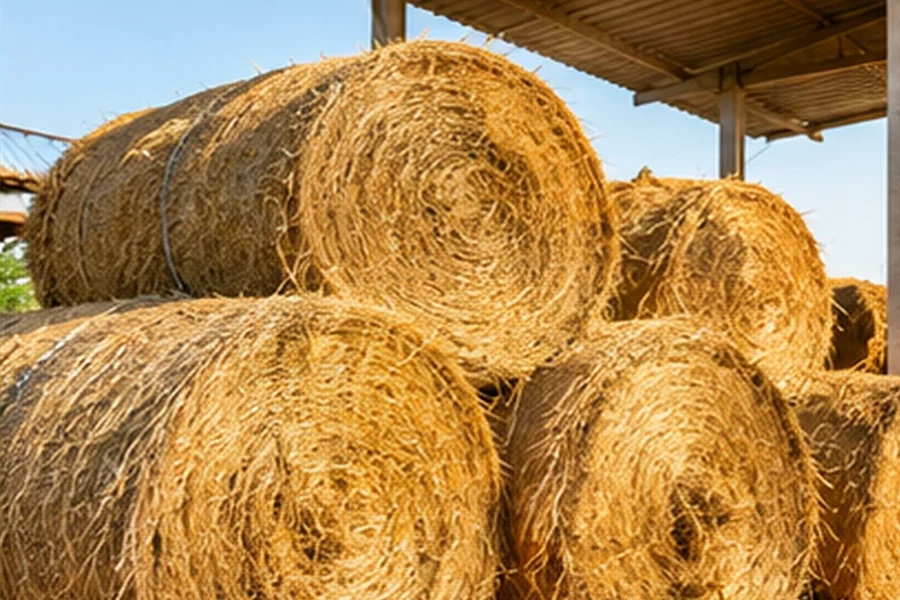
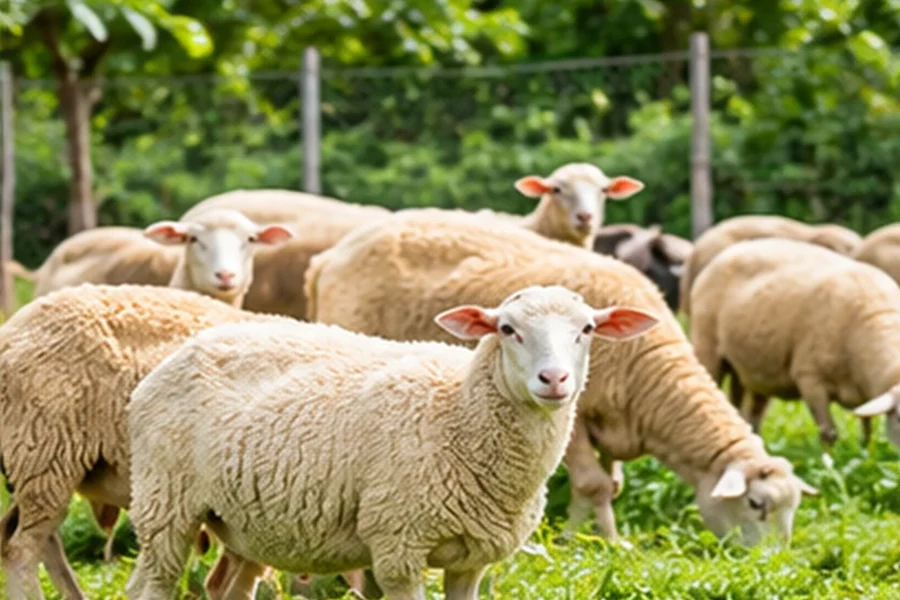
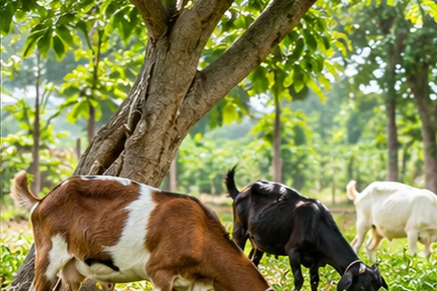

01 / NUTRITION
Feed & fodder supplies
Explore everyday feed and fodder categories for your livestock, with options to help plan routine feeding and seasonal requirements.
View productsExplore farm supply and livestock support designed around everyday needs.
From everyday feed to farm essentials, find a practical place to start.
Choose a service category to explore. Each area is designed to help you identify the right supplies, understand the basics and connect with our team when you need more information.
Ask about a serviceChoose a starting point for the daily work around your farm. Each area connects you with useful products, practical information and the next step when you need support.
Explore everyday feed and fodder categories for your livestock, with options to help plan routine feeding and seasonal requirements.
View products
Find useful care categories and practical information to support observation, clean spaces and everyday animal wellbeing.
Explore careDiscover practical items for field preparation, storage and the many small tasks that keep a farm running smoothly.
Browse supplies
Explore supplies for clean housing, feeding areas and dependable routines across different farm environments.
Enquire nowFrom fresh fodder and livestock care to equipment and clean farm spaces, the categories work together. This moving image rail brings those connected routines into one quick visual overview. Pause it any time to explore a photograph.





Follow a simple path from your first question to the right category and a useful next step.

Tell us about your animals, your setup and the supplies or information you are looking for.
From animal care to the supplies used around the farm, explore practical options in one place. Find guidance for feeding, animal wellbeing and the equipment that helps keep daily work organised.
Explore livestock careTell us about your farm and we’ll help direct your enquiry.
Whether you are looking for feed, animal-care products or general farm supplies, start with a quick message. We can help you find the relevant category.
Explore the right service category or speak with our team about your day-to-day requirements.
Explore products